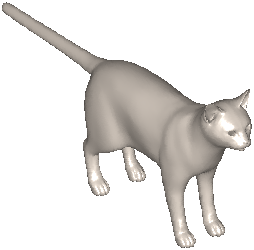
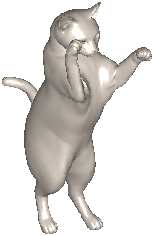
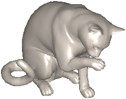
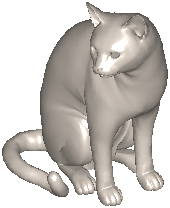
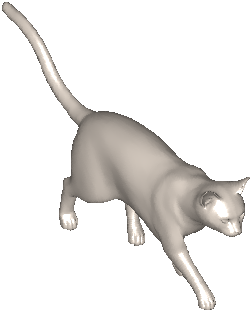
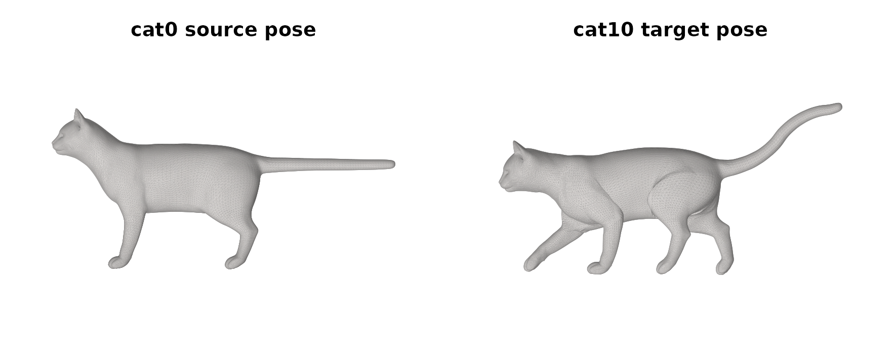
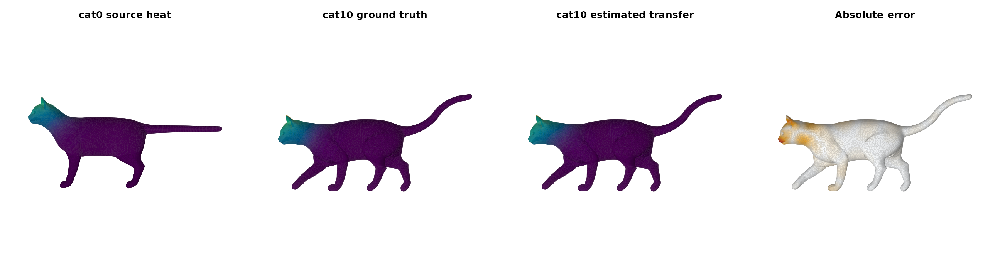
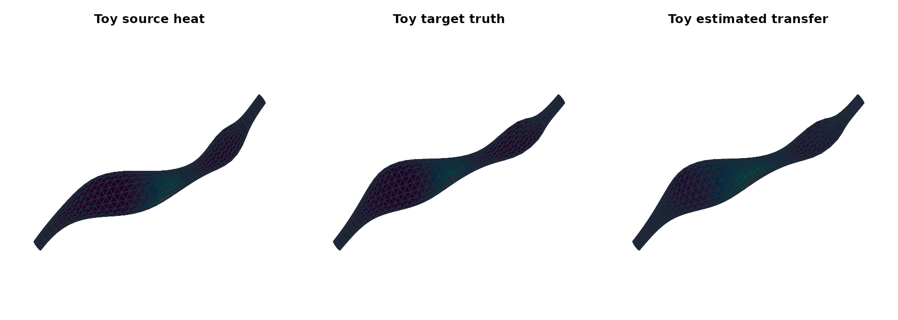

Shape Correspondence on Posed Meshes
Source:vignettes/shape-correspondence-posed-meshes.Rmd
shape-correspondence-posed-meshes.RmdThis vignette has two goals.
First, it shows real benchmark meshes from the classic TOSCA cats used in early functional-maps papers. That gives the package a genuine shape-correspondence example instead of a matrix-only toy.
Second, it keeps one small bundled mesh pair with known exact correspondence so the package can still demonstrate a fully accurate end-to-end workflow in a form that is cheap to render and regression-test.
Start with the real TOSCA cats
library(fmapsR)
pair_real <- fm_example_mesh_pair("tosca_cat10")fm_example_mesh_pair("tosca_cat10") loads vendored
meshes from the TOSCA high-resolution cat benchmark:
-
cat0is the source shape -
cat10is the target pose - the original dataset gives a known vertex correspondence through shared vertex ordering
- bundled thumbnails make it easy to show the original benchmark poses directly in the article





The thumbnails above are the original TOSCA pose renders for
cat0, cat1, cat2,
cat6, and cat10. They are the same family of
meshes referenced in the Ovsjanikov et al. functional-maps paper.
Inspect the actual benchmark pair

This is the actual mesh pair used below, rendered directly from the bundled vertices and faces rather than from the original dataset thumbnails.
Build a real cat-to-cat map
For the real cats, this example uses a cotangent mesh operator with landmark-HKS descriptors and a short ICP refinement pass. The landmark indices are known correspondences supplied to both shapes, so this is a supervised demonstration. The transfer scores below describe this pair and signal; they do not establish unsupervised matching accuracy or performance across TOSCA.
op_source <- fm_operator_mesh(
pair_real$source$vertices,
pair_real$source$faces,
method = "cotangent"
)
op_target <- fm_operator_mesh(
pair_real$target$vertices,
pair_real$target$faces,
method = "cotangent"
)
source_real <- fm_basis(
fm_domain_mesh(pair_real$source$vertices, pair_real$source$faces, operator = op_source),
k = 30,
solver = "rspectra",
cache = FALSE
)
target_real <- fm_basis(
fm_domain_mesh(pair_real$target$vertices, pair_real$target$faces, operator = op_target),
k = 30,
solver = "rspectra",
cache = FALSE
)
desc_source_real <- fm_descriptor_hks(source_real, n_times = 6, landmarks = pair_real$landmarks)
desc_target_real <- fm_descriptor_hks(target_real, n_times = 6, landmarks = pair_real$landmarks)
fit_real <- fm_match(
source_real,
target_real,
descriptors = list(source = desc_source_real, target = desc_target_real),
penalties = list(descr = 1, lap = 1e-4, comm = 0.02),
init = "identity",
optimizer = "cg",
cg_maxit = 300,
cg_tol = 1e-8
)
stopifnot(fit_real$diagnostics$convergence == 0L)
fit_real <- fm_refine(fit_real, method = "icp", nit = 1)Compare ground-truth and estimated heat transfer

The second panel is the exact target heatmap implied by the dataset’s
known correspondence. The third panel is what fmapsR
estimates from the source signal alone. On this
cat0 -> cat10 pair the transferred field stays on the
correct head-and-shoulder region, tracks the body attenuation well, and
broadly preserves the target pose.
knitr::kable(real_metrics, digits = 4)| metric | value |
|---|---|
| Transfer correlation | 0.9949 |
| Top-1% support overlap | 0.8885 |
| Top-5% support overlap | 0.9641 |
| Top-10% support overlap | 0.9416 |
| Transfer MSE | 0.0007 |
This is still not a paper-perfect pointwise correspondence result. Exact nearest-vertex recovery remains much weaker than the smooth transfer shown above, so the right success criterion here is: does the spectral map move a localized function to the correct target region with low distortion? On that criterion, the current cat example is finally strong enough to teach from.
Keep one exact small-mesh sandbox
The bundled toy pair checks an intentionally easy case: both domains use the same topology-derived operator and corresponding synthetic descriptors. Its exact correspondence scores are a workflow regression check, not evidence of accuracy on independently sampled or unfamiliar shapes.
pair_toy <- fm_example_mesh_pair("posed_tube")
op_toy <- fm_operator_mesh(
pair_toy$source$vertices,
pair_toy$source$faces,
method = "face_graph",
weight_mode = "binary"
)
source_toy <- fm_basis(
fm_domain_mesh(pair_toy$source$vertices, pair_toy$source$faces, operator = op_toy),
k = 24,
solver = "rspectra",
cache = FALSE
)
target_toy <- fm_basis(
fm_domain_mesh(pair_toy$target$vertices, pair_toy$target$faces, operator = op_toy),
k = 24,
solver = "rspectra",
cache = FALSE
)
desc_source_toy <- cbind(
scale(pair_toy$source$descriptors),
fm_descriptor_hks(source_toy, n_times = 8, landmarks = pair_toy$landmarks)
)
desc_target_toy <- cbind(
scale(pair_toy$target$descriptors),
fm_descriptor_hks(target_toy, n_times = 8, landmarks = pair_toy$landmarks)
)
fit_toy <- fm_match(
source_toy,
target_toy,
descriptors = list(source = desc_source_toy, target = desc_target_toy),
penalties = list(descr = 1, lap = 1e-4, comm = 0.01),
init = "identity",
optimizer = "cg",
cg_maxit = 8
)
fit_toy <- fm_refine(fit_toy, method = "icp", nit = 4)
knitr::kable(toy_table, digits = 4)| metric | value |
|---|---|
| Exact match rate | 1.0000 |
| Coverage ratio | 1.0000 |
| Normalized geodesic error | 0.0000 |
| Transfer MSE | 0.0036 |
That split is deliberate:
- the real TOSCA cats provide the recognizable benchmark visuals
- the small bundled mesh pair provides the exact quantitative workflow that the package can currently defend end to end